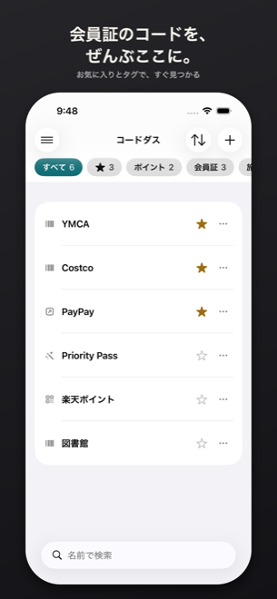
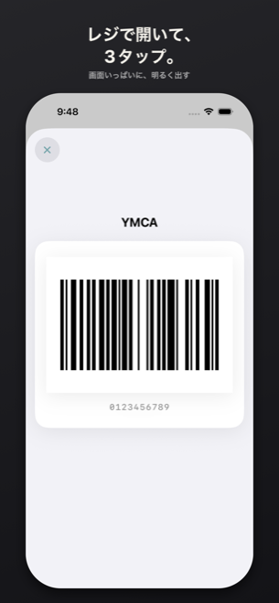
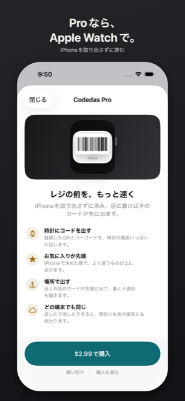

コードダス
レジの前を、もっと速く

会員証やポイントカードのQRコード・バーコードを保存して、レジの前で3タップ以内に出せるiPhoneアプリです。 その場で発行される決済コードのように、コードが毎回変わるカードは保存できないので、公式アプリを開く項目として登録します。 1つの一覧に「見せるコード」と「開くアプリ」が並ぶので、レジで探し回らずに済みます。



よくある質問
どの種類のコードを出せますか QR、Code 128、Code 39、EAN-13です。画像は保存せず、表示するたびに値からコードを描き直します。
読み取ったのに「再生成に対応していません」と出ます カメラが読める種類のほうが、描き直せる種類より多いためです。PDF417、Aztec、DataMatrix、マイクロQRなどが当たります。 読み取った値は表示しますが、コードとしては出せません。そのカードは現物を使うか、そのお店の公式アプリを開く項目として登録してください。
コードが毎回変わるカードは登録できますか できません。その場で発行されるコードは、その瞬間しか通らないためです。 公式アプリを開く項目として登録すると、保存したコードと同じ一覧に並びます。
開きたいアプリが一覧にありません 一覧に載せているのは、URLスキームの出典があるアプリだけです。 それ以外は、URLスキームを自分で入れるか(paypay または paypay://)、ショートカットを使います。
ショートカットはどう使いますか URLスキームが公開されていないアプリは、ショートカットアプリでそのアプリを開く項目を1つ作り、付けた名前をコードダスに入れます。 一字でも違うと動かないので、コピーして貼るのが確実です。「コードダス：PayPay」のように前置きを付けると、他のショートカットと混ざりません。 よく使うものは見本を1タップで入れられます。
コードを出すと画面が白く明るくなります 白背景で輝度を上げたほうが読み取り率が高いためです。表示中はスリープも止めます。閉じると元の輝度に戻ります。
ロック画面に何も出ません アプリを開くと、お気に入りの上位3件が並び、12時間で自動的に消えます。 出ないときは、設定の「ロック画面」で「お気に入りを出す」が入になっているか、iOSの設定でライブアクティビティが入になっているかを確かめてください。 どちらが原因かは設定画面に出ます。
ホーム画面から開けますか アプリアイコンを長押しすると、お気に入りの上位4件が出ます。
Codedas Proで何が使えますか 3つです。Apple Watchにコードを出すこと、場所(カードを使う店を覚えると、近くにいるときそのカードが一覧の先頭に出て、着いたら通知も届く)、iCloud同期。 コードを保存してレジで出すところまでは無料で、読み取り・ロック画面・バックアップも無料のままです。
Codedas Proは月額ですか 買い切りです。毎月の支払いはありません。広告も入れていません。
買ったのに、機種を変えたら使えません 設定の「購入を復元」を押してください。購入したときと同じApple Accountでサインインしている必要があります。
Apple Watchにコードが届きません 3つとも必要です。Codedas Proを持っていること、設定の「Apple Watch」で「コードを同期」が入になっていること、時計側にCodedasが入っていること。 アプリを開くだけの項目やショートカットの項目は、出せるコードが無いので送りません。
店に着いても通知が来ません 到着の通知には位置情報の「常に許可」が要ります。「常に」はアプリからは選べないので、iOSの設定 → Codedas → 位置情報 で切り替えてください。 通知の許可も必要です。なお、iOSが一度に見張れる場所の数には上限があるため、コードダスは近い場所から順に見張ります。
もう1台のiPhoneやiPadに同じカードが出ません iCloud同期はCodedas Proの機能です。両方の端末が同じApple Accountでサインインし、iCloudが使える状態になっている必要があります。 いまiCloudがどうなっているかは設定画面に出ます。iCloud側の件数や、まだ送れていない件数も分かります。
機種変更のときはどうすればいいですか iPhoneのバックアップから復元すれば、登録内容も一緒に移ります。Codedas Proを使っていればiCloudからも戻ります。 設定から登録内容をJSONで書き出しておくこともできます。読み込むと現在の内容を置き換えるので、消してしまったときのための控えです。
カードを間違えて消しました 削除は元に戻せません。登録し直すにはカードの現物が要ります。 JSONの控えがあるか、iCloud同期を使っている別の端末が残っていれば、そこから戻せます。
登録した内容はどこに保存されますか 端末の中です。Codedas Proを使っている場合は、あなた自身のiCloudにも保存されます。 開発者のサーバーには送りません(そもそも持っていません)。詳しくはプライバシーポリシーをご覧ください。
動作環境を教えてください iOS 18以降のiPhoneです。時計のアプリはwatchOS 10以降が必要です。
解決しないときは
kakumeiapps@gmail.com までご連絡ください。 何をしたときに何が起きたかと、iOSのバージョン、カードのお店の名前があると調べやすくなります。